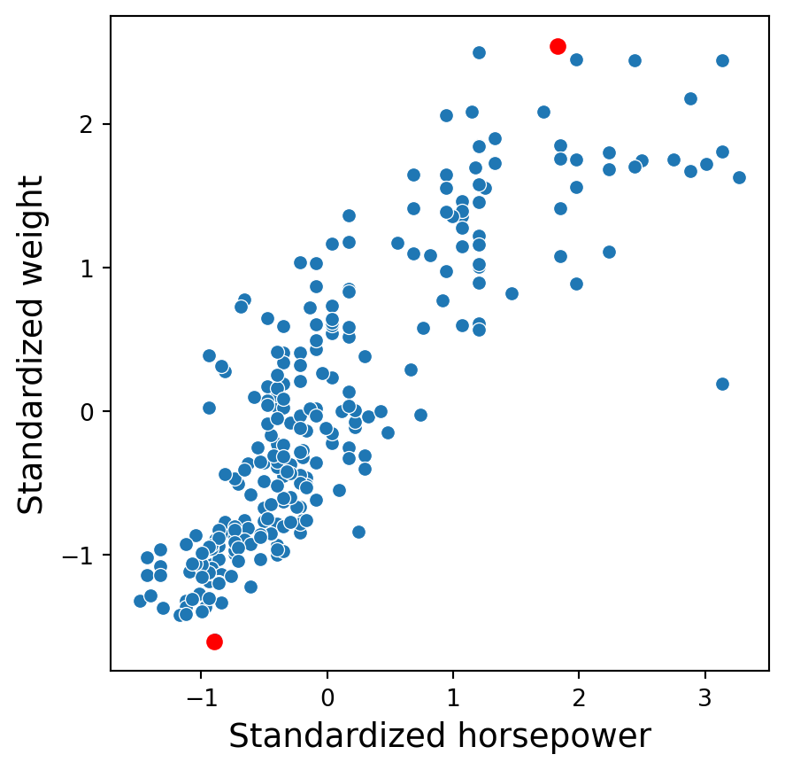

import pandas as pd
import matplotlib.pyplot as plt
import seaborn as sns
from sklearn.model_selection import train_test_split
from sklearn.impute import SimpleImputer, KNNImputer
from sklearn.preprocessing import PowerTransformer, StandardScaler
from sklearn.feature_selection import VarianceThresholdData preprocessing: Part II
IN5148: Statistics and Data Science with Applications in Engineering
Agenda
- Transforming predictors
- Reducing the number of predictors
- Standardizing the units of the predictors
Before we start
Let’s import scikit-learn into Python together with the other relevant libraries.
We will not use all the functions from the scikit-learn library. Instead, we will use specific functions from the sub-libraries preprocessing, feature_selection, model_selection and impute.
Transforming predictors
Categorical predictors
A categorical predictor takes on values that are categories or groups.
. . .
For example:
Type of school: Public or private.
Treatment: New or placebo.
Grade: Passed or not passed.
. . .
The categories can be represented by names, labels or even numbers. Their use in regression requires dummy variables, which are numeric.
Dummy variables
The traditional choice for a dummy variable is a binary variable, which can only take the values 0 and 1.
Initially, a categorical variable with \(k\) categories requires \(k\) dummy variables.
Example 1
A market analyst is studying quality characteristics of cars. Specifically, the analyst is investigating the miles per gallon (mpg) of cars can be predicted using:
- \(X_1:\) cylinders. Number of cylinders between 4 and 8
- \(X_2:\) displacement. Engine displacement (cu. inches)
- \(X_3:\) horsepower. Engine horsepower
- \(X_4:\) weight. Vehicle weight (lbs.)
- \(X_5:\) acceleration. Time to accelerate from 0 to 60 mph (sec.)
- \(X_6:\) origin. Origin of car (American, European, Japanese)
The dataset is in the file “auto.xlsx”. Let’s read the data using pandas.
# Load the Excel file into a pandas DataFrame.
auto_data = pd.read_excel("auto.xlsx")
# Set categorical variables.
auto_data['origin'] = pd.Categorical(auto_data['origin'])Training and validation datasets
For illustrative purposes, we assume that we want to predict the miles per gallon of a car using the six predictors, \(X_1, \ldots, X_6\).
We create the predictor matrix and response column.
# Set full matrix of predictors.
X_full_c = (auto_data
.filter(['cylinders', 'displacement',
'horsepower', 'weight', 'acceleration', 'origin']))
# Set full matrix of responses.
Y_full_c = auto_data.filter(['mpg'])We will use a validation dataset with 30% of the observations in auto_data. The other 70% will be in the training dataset.
# Split the dataset into training and validation.
X_train_c, X_valid_c, Y_train_c, Y_valid_c = train_test_split(X_full_c, Y_full_c,
test_size = 0.3,
random_state = 59227)Let’s look at the full training dataset.
training_auto = pd.concat([X_train_c, Y_train_c], axis = 1)
training_auto.head()| cylinders | displacement | horsepower | weight | acceleration | origin | mpg | |
|---|---|---|---|---|---|---|---|
| 46 | 6 | 250.0 | 100 | 3282 | 15.0 | American | 19.0 |
| 72 | 8 | 307.0 | 130 | 4098 | 14.0 | American | 13.0 |
| 389 | 4 | 135.0 | 84 | 2295 | 11.6 | American | 32.0 |
| 145 | 4 | 90.0 | 75 | 2108 | 15.5 | European | 24.0 |
| 11 | 8 | 340.0 | 160 | 3609 | 8.0 | American | 14.0 |
Dealing with missing values
The dataset has missing values. In this example, we remove each row with at least one missing value.
# Remove rows with missing values.
complete_Auto = training_auto.dropna()Example 1 (cont.)
Categorical predictor: Origin of a car. Three categories: American, European and Japanese.
Initially, 3 dummy variables are required:
\[d_1 = \begin{cases} 1 \text{ if observation is from an American car}\\ 0 \text{ otherwise} \end{cases}\] \[d_2 = \begin{cases} 1 \text{ if observation is from an European car}\\ 0 \text{ otherwise} \end{cases}\] \[d_3 = \begin{cases} 1 \text{ if observation is from a Japanese car}\\ 0 \text{ otherwise} \end{cases}\]
The variable Origin would then be replaced by the three dummy variables
| Origin (\(X\)) | \(d_1\) | \(d_2\) | \(d_3\) |
|---|---|---|---|
| American | 1 | 0 | 0 |
| American | 1 | 0 | 0 |
| European | 0 | 1 | 0 |
| European | 0 | 1 | 0 |
| American | 1 | 0 | 0 |
| Japanese | 0 | 0 | 1 |
| \(\vdots\) | \(\vdots\) | \(\vdots\) | \(\vdots\) |
A drawback
A drawback with the initial dummy variables is that they are linearly dependent. That is, \(d_1 + d_2 + d_3 = 1\).
Therefore, we can determine the value of \(d_1 = 1- d_2 - d_3.\)
Predictive models such as linear regression are sensitive to linear dependencies among predictors.
The solution is to drop one of the predictor, say, \(d_1\), from the data.
The variable Origin would then be replaced by the three dummy variables.
| Origin (\(X\)) | \(d_2\) | \(d_3\) |
|---|---|---|
| American | 0 | 0 |
| American | 0 | 0 |
| European | 1 | 0 |
| European | 1 | 0 |
| American | 0 | 0 |
| Japanese | 0 | 1 |
| \(\vdots\) | \(\vdots\) | \(\vdots\) |
Dummy variables in Python
We can get the dummy variables of a categorical variable using the function pd.get_dummies() from pandas.
The input of the function is the categorical variable.
The function has an extra argument called drop_first to drop the first dummy variable. It also has the argument dtype to show the values as integers.
dummy_data = pd.get_dummies(complete_Auto['origin'], drop_first = True,
dtype = 'int')dummy_data.head()| European | Japanese | |
|---|---|---|
| 46 | 0 | 0 |
| 72 | 0 | 0 |
| 389 | 0 | 0 |
| 145 | 1 | 0 |
| 11 | 0 | 0 |
Now, to add the dummy variables to the dataset, we use the function concat() from pandas.
augmented_auto = pd.concat([complete_Auto, dummy_data], axis = 1)
augmented_auto.head()| cylinders | displacement | horsepower | weight | acceleration | origin | mpg | European | Japanese | |
|---|---|---|---|---|---|---|---|---|---|
| 46 | 6 | 250.0 | 100 | 3282 | 15.0 | American | 19.0 | 0 | 0 |
| 72 | 8 | 307.0 | 130 | 4098 | 14.0 | American | 13.0 | 0 | 0 |
| 389 | 4 | 135.0 | 84 | 2295 | 11.6 | American | 32.0 | 0 | 0 |
| 145 | 4 | 90.0 | 75 | 2108 | 15.5 | European | 24.0 | 1 | 0 |
| 11 | 8 | 340.0 | 160 | 3609 | 8.0 | American | 14.0 | 0 | 0 |
Transforming numerical predictors
A common problem with a predictor is that it may have a skewed distribution. That is, a distribution that accumulates many observations in smaller or larger values of the predictor.
For example, consider the distribution of the predictor DIS (weighted mean of distances to five Boston employment centers) in the “BostonHousing.xlsx” dataset.
Example 2
We revisit the “BostonHousing.xlsx” dataset that contains data of houses in Boston, Massachusetts.
The goal is to predict the median house price in new tracts based on information such as crime rate, pollution, and number of rooms.
The response is the median value of owner-occupied homes in $1000s, contained in the column MEDV.
The predictors
CRIM: per capita crime rate by town.ZN: proportion of residential land zoned for lots over 25,000 sq.ft.INDUS: proportion of non-retail business acres per town.CHAS: Charles River (‘Yes’ if tract bounds river; ‘No’ otherwise).NOX: nitrogen oxides concentration (parts per 10 million).RM: average number of rooms per dwelling.AGE: proportion of owner-occupied units built prior to 1940.DIS: weighted mean of distances to five Boston employment centersRAD: index of accessibility to radial highways (‘Low’, ‘Medium’, ‘High’).TAX: full-value property-tax rate per $10,000.PTRATIO: pupil-teacher ratio by town.LSTAT: lower status of the population (percent).
Read the dataset
We read the dataset.
Boston_data = pd.read_excel('BostonHousing.xlsx')The variables CHAS and RAD are categorical variables. Therefore, we turn tthem into categorical using .Categorical() function from pandas.
Boston_data['CHAS'] = pd.Categorical(Boston_data['CHAS'])
Boston_data['RAD'] = pd.Categorical(Boston_data['RAD'],
categories=["Low", "Medium", "High"],
ordered=True)Before we continue, we generate a training dataset with 80% of the observations. To this end, let’s create the predictor matrix and response column.
# Set full matrix of predictors.
X_full_b = Boston_data.drop(columns = ['MEDV'])
# Set full matrix of responses.
Y_full_b = Boston_data.filter(['MEDV'])
# Split the dataset into training and validation.
X_train_b, X_valid_b, Y_train_b, Y_valid_b = train_test_split(X_full_b,
Y_full_b,
test_size = 0.2,
random_state = 59227)The new training dataset we will work with is:
Boston_training = pd.concat([X_train_b, Y_train_b], axis = 1)
Boston_training.head()| CRIM | ZN | INDUS | CHAS | NOX | RM | AGE | DIS | RAD | TAX | PTRATIO | LSTAT | MEDV | |
|---|---|---|---|---|---|---|---|---|---|---|---|---|---|
| 432 | 6.44405 | 0.0 | 18.10 | No | 0.584 | 6.425 | 74.8 | 2.2004 | High | 666 | 20.2 | 12.03 | 16.1 |
| 108 | 0.12802 | 0.0 | 8.56 | No | 0.520 | 6.474 | 97.1 | 2.4329 | Medium | 384 | 20.9 | 12.27 | 19.8 |
| 97 | 0.12083 | 0.0 | 2.89 | No | 0.445 | 8.069 | 76.0 | 3.4952 | Low | 276 | 18.0 | 4.21 | 38.7 |
| 484 | 2.37857 | 0.0 | 18.10 | No | 0.583 | 5.871 | 41.9 | 3.7240 | High | 666 | 20.2 | 13.34 | 20.6 |
| 217 | 0.07013 | 0.0 | 13.89 | No | 0.550 | 6.642 | 85.1 | 3.4211 | Medium | 276 | 16.4 | 9.69 | 28.7 |
Distribution of DIS
A right-skewed distribution is characterized by the right tail (or the side with higher values) being longer and more extended than the left tail.
Code
plt.figure(figsize=(8,3.5)) # Create space for figure.
sns.histplot(data = Boston_training, x = 'DIS') # Create the histogram.
plt.title("Histogram of DIS") # Plot title.
plt.xlabel("DIS") # X label
plt.show() # Display the plot
Problems with strong skewness
Strong (right or left) skewness in a predictor can:
- Distort the relationship with the response.
- Violate the assumptions of the linear regression model (e.g., linearity, homoscedasticity).
- Lead to influential outliers or poor model fit.
To correct the skewness of a predictor’s distribution, we can transform the predictor using the Box-Cox transformation
Box-Cox Transformation
The Box-Cox transformation uses a family of power transformations on a predictor \(X\) such that \(X' = X^{\lambda}\), where \(\lambda\) is a parameter to be determined using the data. When \(\lambda = 0,\) this means \(X' = \ln(X)\), where \(\ln(\cdot)\) is the natural logarithm.
The Box-Cox transformation is the element of this family that results in a transformed variable that follows a normal distribution (approximately).
The variable \(X\) must be strictly positive!
In Python
We apply the Box-Cox transformation using the PowerTransformer and fit_transform functions of the scikit-learn library.
pt = PowerTransformer(method='box-cox', standardize = False)
DIS_transform = pt.fit_transform(Boston_training[['DIS']])In the PowerTransformer, the input standardize specifies if we wish to standardize the resulting transformed predictor to have a mean of zero and a standard deviation of one. We do not standardize the predictor yet.
The result from the function is a numpy array. However, since we are working with pandas dataframes, we must transform the output to this format using the following code.
DIS_transform_df = pd.DataFrame(DIS_transform, columns=['DIS_boxcox'])
DIS_transform_df.head()| DIS_boxcox | |
|---|---|
| 0 | 0.751469 |
| 1 | 0.842035 |
| 2 | 1.159532 |
| 3 | 1.213652 |
| 4 | 1.141146 |
Original predictor
Code
plt.figure(figsize=(7,4)) # Create space for figure.
sns.histplot(data = Boston_training, x = 'DIS') # Create the histogram.
plt.title("Histogram of DIS") # Plot title.
plt.xlabel("DIS") # X label
plt.show() # Display the plot
Box-Cox transformation
Code
plt.figure(figsize=(7,4)) # Create space for figure.
sns.histplot(data = DIS_transform_df, x = 'DIS_boxcox') # Create the histogram.
plt.title("Histogram of transformed DIS") # Plot title.
plt.xlabel("DIS (Box-Cox transformation") # X label
plt.show() # Display the plot
Value of \(\lambda\)
Recall that the Box-Cox transformation finds the best value of \(\lambda\) that makes the transformed predictor \(X^\lambda\) to follow a normal distribution.
We can obtain the value of \(\lambda\) actually used in the transformation using the following code.
# Retrieve the lambda value
print(pt.lambdas_)[-0.12343575]This means that the transformed predictor is \(X' = X^{-0.123}\).
Discussion
The Box-Cox transformation can:
Make the distribution of a predictor more symmetric.
Help to linearize the relationship with the response.
After transformation, the predictor \(X'\) must be used instead of the original predictor \(X\).
Reducing the number of predictors
Removing predictors
There are potential advantages to removing predictors prior to modeling:
Fewer predictors means decreased computational time and complexity.
If two predictors are highly-correlated, they are measuring the same underlying information. So, removing one should not compromise the performance of the model.
. . .
Here, we will see two techniques to remove predictors.
Near-Zero variance predictors
A near-zero variance predictor variable is one that has only a handful of unique values that occur with very low frequencies.
. . .
If the predictor has a single unique value, then it is called a zero-variance predictor variable.
. . .
Since the values of this predictor variable do not vary or change at all, this predictor does not provide any information to the model and must be discarded.
Example 3
We consider a data set related to Glass identification. The data has 214 glass samples labeled as one of seven glass categories. There are nine predictors including the refractive index (RI) and percentages of eight elements: Na, Mg, Al, Si, K, Ca, Ba, and Fe.
Let’s read the data set.
# Load Excel file (make sure the file is in your Colab)
glass_data = pd.read_excel('glass.xlsx')Training and validation datasets
Let’s create a training and validation dataset. To this end, we will consider the variable Type as the response and the other numeric variables as the predictors. We will use 80% of the observations for the training dataset. The other 20% of the observations will go to the validation dataset.
# Set full matrix of predictors.
X_full_g = glass_data.drop(columns = ['Type'])
# Set full matrix of responses.
Y_full_g = glass_data.filter(['Type'])
# Split the dataset into training and validation.
X_train_g, X_valid_g, Y_train_g, Y_valid_g = train_test_split(X_full_g,
Y_full_g,
test_size = 0.2,
random_state = 59227)In Python
We use the function VarianceThreshold() to set the threshold for determining a low sample variance. We also use other functions such as .fit() and .get_support().
# Set threshold
selector = VarianceThreshold(threshold=0.01)
# Apply threshold.
selector.fit(X_train_g)
# Identify predictors with low variance.
low_variance_cols = X_train_g.columns[~selector.get_support()]
# Print the list of predictors.
print(f"Low variance columns: {low_variance_cols}")Low variance columns: Index(['RI', 'Fe'], dtype='object')After identifying predictors with low variability, we remove them from the problem because they do not add much to the problem. To this end, we use the command below.
# Removing problematic predictors
sb_Xtrain_glass = X_train_g.drop(columns=low_variance_cols)Between-predictor correlation
Collinearity is the technical term for the situation where two predictors have a substantial correlation with each other.
If two or more predictors are highly correlated (either negatively or positively), then methods such as the linear regression model will not work!
To visualize the severity of collinearity between predictors, we calculate and visualize the correlation matrix.
Example 1 (cont.)
We concentrate on the five numerical predictors in the complete_Auto dataset.
# Select specific variables.
complete_sbAuto = complete_Auto[['cylinders', 'displacement',
'horsepower', 'weight',
'acceleration']]Correlation matrix
In Python, we calculate the correlation matrix using the command below.
correlation_matrix = complete_sbAuto.corr()
print(correlation_matrix) cylinders displacement horsepower weight acceleration
cylinders 1.000000 0.948230 0.838415 0.893440 -0.503982
displacement 0.948230 1.000000 0.900045 0.929755 -0.549727
horsepower 0.838415 0.900045 1.000000 0.850926 -0.702888
weight 0.893440 0.929755 0.850926 1.000000 -0.413908
acceleration -0.503982 -0.549727 -0.702888 -0.413908 1.000000Next, we plot the correlation matrix using the function heatmap() from seaborn. The argument annot shows the actual value of the pair-wise correlations, and cmap shows a nice color theme.
plt.figure(figsize=(3,3))
sns.heatmap(correlation_matrix, cmap='coolwarm', annot = True)
The predictors cylinders and displacement are highly correlated. In fact, their correlation is 0.95.

In practice
We deal with collinearity by removing the minimum number of predictors to ensure that all pairwise correlations are below a certain threshold, say, 0.75.
We can identify the variables that are highly correlated using quite complex code. However, here we will do it manually using the correlation map.
# Dataset without highly correlated predictors.
reduced_auto = complete_sbAuto[ ['weight', 'acceleration']]Standarization
Predictors with different units
Many good predictive models have issues with numeric predictors with different units:
Methods such as K-nearest neighbors are based on the distance between observations. If the predictors are on different units or scales, then some predictors will have a larger weight for computing the distance.
Other methods such as LASSO use the variances of the predictors in their calculations. Predictors with different scales will have different variances and so, those with a higher variance will play a bigger role in the calculations.
In a nutshell, some predictors will have a higher impact in the model due to its unit and not its information provided to it.
Standarization
Standardization refers to centering and scaling each numeric predictor individually. It puts every predictor on the same scale.
To center a predictor variable, the average predictor value is subtracted from all the values.
Therefore, the centered predictor has a zero mean (that is, its average value is zero).
To scale a predictor, each of its value is divided by its standard deviation.
Scaling the data coerce the values to have a common standard deviation of one.
In mathematical terms, we standardize a predictor as:
\[{\color{blue} \tilde{X}_{i}} = \frac{{ X_{i} - \bar{X}}}{ \sqrt{\frac{1}{n -1} \sum_{i=1}^{n} (X_{i} - \bar{X})^2}},\]
with \(\bar{X} = \sum_{i=1}^n \frac{x_i}{n}\).
Example 1 (cont.)
We use on the five numerical predictors in the complete_sbAuto dataset.
complete_sbAuto.head()| cylinders | displacement | horsepower | weight | acceleration | |
|---|---|---|---|---|---|
| 46 | 6 | 250.0 | 100 | 3282 | 15.0 |
| 72 | 8 | 307.0 | 130 | 4098 | 14.0 |
| 389 | 4 | 135.0 | 84 | 2295 | 11.6 |
| 145 | 4 | 90.0 | 75 | 2108 | 15.5 |
| 11 | 8 | 340.0 | 160 | 3609 | 8.0 |
Two predictors in original units
Consider the complete_sbAuto dataset created previously. Consider two points in the plot: \((175, 5140)\) and \((69, 1613)\).

The distance between these points is \(\sqrt{(69 - 175)^2 + (1613-5140)^2}\) \(= \sqrt{11236 + 12439729}\) \(= 3528.592\).
Standarization in Python
To standardize numerical predictors, we use the function StandardScaler(). Moreover, we apply the function to the variables using the function fit_transform().
scaler = StandardScaler()
Xs = scaler.fit_transform(complete_sbAuto)Unfortunately, the resulting object is not a pandas data frame. We then convert this object to this format.
scaled_df = pd.DataFrame(Xs, columns = complete_sbAuto.columns)
scaled_df.head()| cylinders | displacement | horsepower | weight | acceleration | |
|---|---|---|---|---|---|
| 0 | 0.370463 | 0.574266 | -0.089095 | 0.426617 | -0.205840 |
| 1 | 1.564660 | 1.118000 | 0.685890 | 1.410503 | -0.561901 |
| 2 | -0.823735 | -0.522741 | -0.502421 | -0.763451 | -1.416449 |
| 3 | -0.823735 | -0.952004 | -0.734916 | -0.988925 | -0.027809 |
| 4 | 1.564660 | 1.432793 | 1.460876 | 0.820895 | -2.698270 |
Two predictors in standardized units
In the new scale, the two points are now: \((1.82, 2.53)\) and \((-0.91, -1.60)\).

The distance between these points is \(\sqrt{(-0.91 - 1.82)^2 + (-1.60-2.53)^2}\) \(= \sqrt{7.45 + 17.05} = 4.95\).
Discussion
Standardized predictors are generally used to improve the numerical stability of some calculations.
It is generally recommended to always standardize numeric predictors. Perhaps the only exception would be if we consider a linear regression model.
A drawback of these transformations is the loss of interpretability since the data are no longer in the original units.
Standardizing the predictors does not affect their correlation.